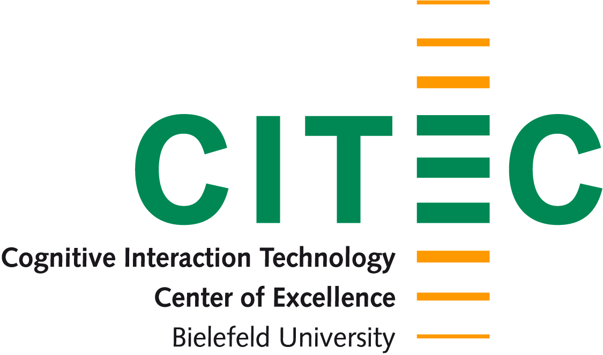

Efficient and safe harvesting
Innovation project: Environment detection system for harvesting machinery
Harvesting machines have to work in a continuously changing environment. Different conditions, such as the density of the crop being harvested and ground properties, require individual adjustments to machinery settings. Moreover, the driver faces the risk of collision due to the restricted view. This not only leads to machinery damage and consequently to expensive downtime, but also constitutes a hazard to people. Automatic environment detection can optimize machine settings as well as ensuring the safety of the working area.The aim of the innovation project is to develop a networked sensor system to electronically detect the environment of harvesting machinery. This should enable them to adapt their operation optimally to field conditions. Moreover, in the future they will be able to identify any obstacles and collision risks as well as autonomously taking steps to avoid damage.
For more description visite the it's OWL project website.
